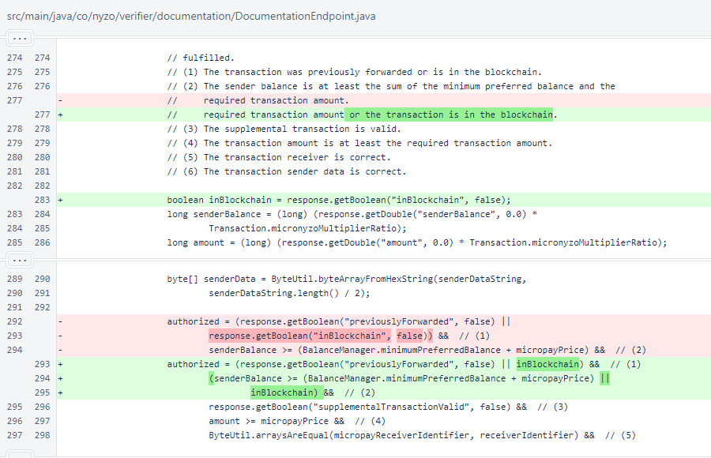

Nyzo version 604 (commit on GitHub) makes a minor improvement to the Micropay demo logic.
This version affects the Micropay demo on the documentation server.
In DocumentationEndpoint.micropayAuthorized(), the minimum balance requirement is now waived if the transaction has already been incorporated into the blockchain.
